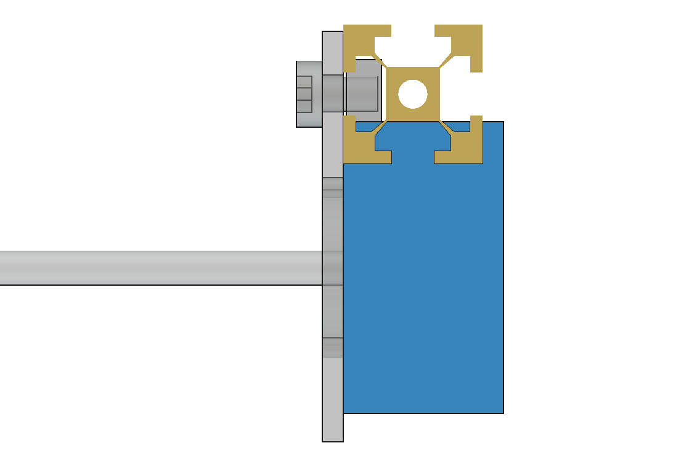
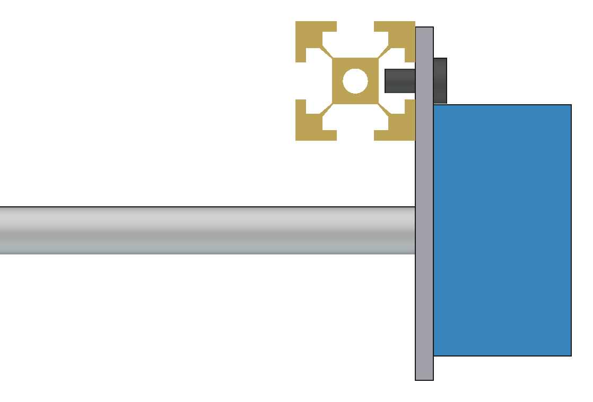
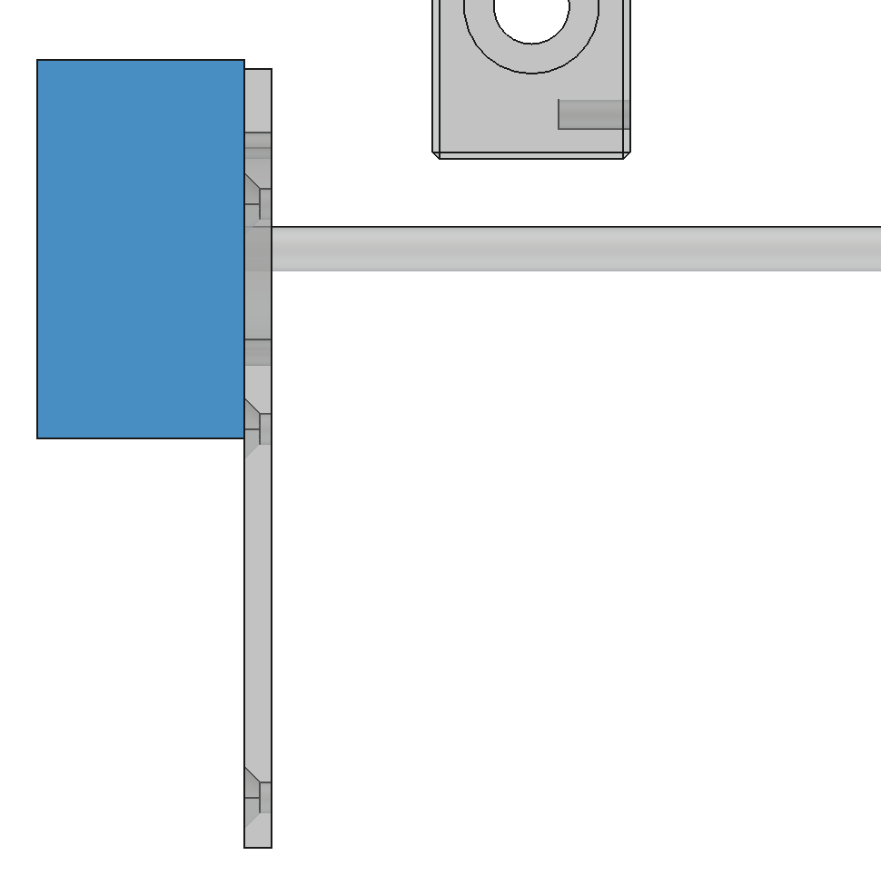
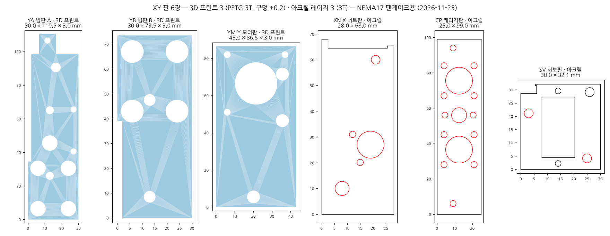
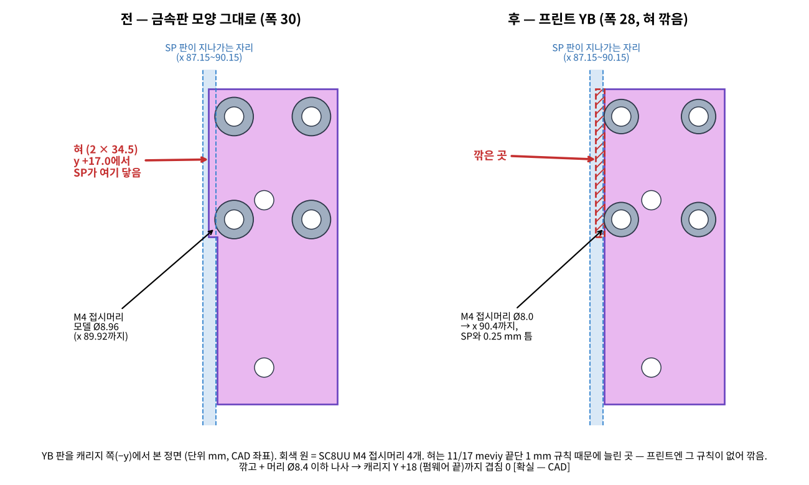
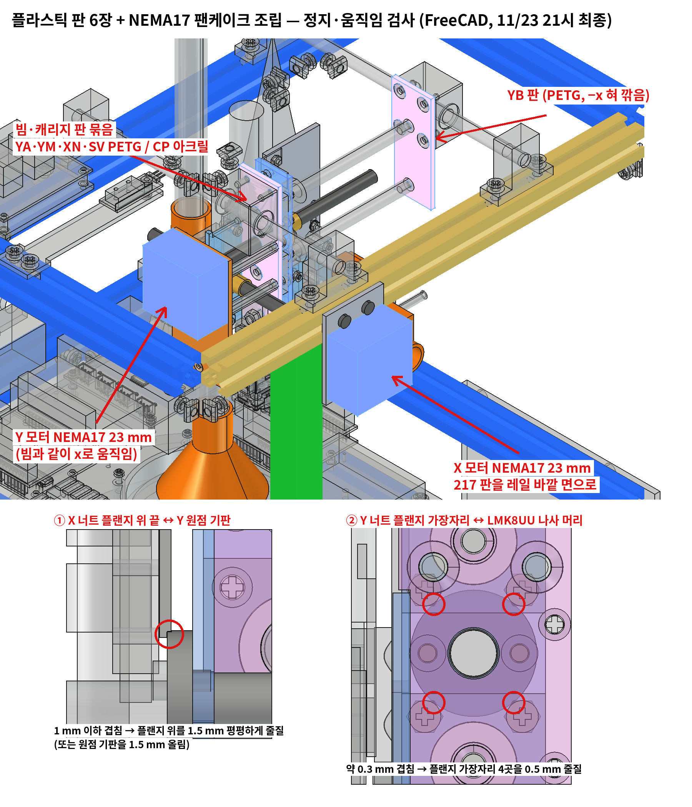

말벌 자동 마킹 트랩 · 승준 (Claude 정리, CAP-AI-SJ-63) · 오늘 바뀐 것만 모음 · 표시: [확실 — CAD] FreeCAD로 검사함 · [가능성 높음] 손계산 · [추측] 확인 못 함 · 서현 확인 필요한 것은 빨강
| 부분 | 전 (11/18 설계) | 후 (11/23 최종) | 왜 |
|---|---|---|---|
| X · Y 모터 | LM-NK1134 28각, Tr5 리드 2 | NEMA17 42 × 42 × 23 + T8 리드 8, 스크류 X 155 · Y 132로 잘라 받음 | 납기 |
| X 모터판 217 | +x 레일 안쪽 면 | 레일 바깥 면으로 23 mm 옮김, 모터는 프레임 밖 | 안쪽이면 몸이 레일에 6 mm 겹침 |
| YA · YB · YM · XN · SV | 알루미늄 3T (meviy) | PETG 3D 프린트 3T (학교) | 출하 12/02, 아크릴은 접시 · 얇은 벽에 약함 |
| CP 캐리지판 | 알루미늄 3T (meviy) | 아크릴 3T 레이저 (아크릴몰, 2장 묶음) | 접시 없음, 벽 2 mm |
| YB 빔판 B | −x 쪽 혀 있음 (폭 30) | 혀 깎음 (폭 28) | 캐리지가 y +17에서 혀에 닿던 문제 해결 |
| 리드 너트 | POM 너트 (작음) | T8 황동 너트 (플랜지 Ø22) · 플랜지 줄질 2곳 | 플랜지가 1 mm 이하로 걸림 |
| 펌웨어 (서현) | 400 걸음/mm | 100 걸음/mm (1/4 스텝) | 리드 2 → 8 mm |
X 나사 축 높이는 z 425, 바로 위 갠트리 레일 밑면은 z 440 → 축 위로 15 mm밖에 없다. 42 mm 네모는 반이 21 mm라 6 mm 넘친다 (28 mm일 땐 14 mm라 1 mm 남았음). 축 높이는 봉 · 너트 · 판이 정해서 못 바꾼다.



| 무엇 | 바뀐 점 |
|---|---|
| 217 X 모터판 (금속, 11/25 도착) | 모양은 그대로, 붙이는 면만 바뀜. 손 가공 Ø3.4 × 4 (31 간격, 위 2개는 레일 쪽 면에 접시) — 인쇄용 1:1 도안 2026-11-23_승준_판구멍_1대1도안.pdf |
| 217을 레일에 다는 나사 | M5 둥근머리 (머리 Ø9.5)는 모터 몸에 0.75 mm 걸림 → M4 × 8 둥근머리 (Ø7.6) + 20시리즈 스프링너트 M4 2 (판 구멍 Ø5.5 그대로) [확실 — CAD] |
| Y 모터 | 그 자리 그대로 들어감. YM 판 구멍만 NEMA17용 (아래 2장) |
| 원점 쪽 (Y) | 지금 설계도 판이 스위치 레버를 누른 뒤 0.9 mm에서 원점 팔 226p에 닿음 — 팬케이크로 바뀌어도 같음. 원점 찾기는 천천히. |
| 판 | 만드는 법 | 크기 (mm) | 이 판에서 바뀐 것 |
|---|---|---|---|
| YA 빔판 A | PETG 프린트 | 30 × 110.5 | 모양 그대로 (M4 접시 6) |
| YB 빔판 B | PETG 프린트 | 28 × 73.5 | −x 혀 깎음 (3장 참고) |
| YM Y 모터판 | PETG 프린트 (PLA X — 모터 40~60 °C) | 43 × 86.5 | 옛 모터 구멍 메움 → NEMA17 Ø3.4 × 3 (31 간격. 4번째는 기둥 접시 자리를 파고들어 뺌) |
| XN X 너트판 | PETG 프린트 | 28 × 68 | 가운데 Ø8.5 → Ø10.5 (T8 너트 몸 Ø10.2 통과), 옛 M2 탭 메움, M3 탭 밑구멍 Ø2.5 × 2 → M3 × 6 |
| SV 서보판 | PETG 프린트 | 32.1 × 30 | 모양 그대로 |
| CP 캐리지판 | 아크릴 3T 레이저 | 25 × 99 | 옛 POM 너트 구멍 메움 → Ø3.4 × 2 (가로, T8 너트) + 뒤 M3 너트. 아크릴몰은 50 × 50 밑을 못 잘라 2장 묶음 62 × 105로 주문 (1장 예비) |

| 프린트 (학교) | PETG, 채움 100 % (또는 벽 5겹 이상), 층 0.2 mm, 받침 없이, 5장 한 판 (가장 긴 것 110.5). 구멍이 빡빡하면 같은 지름 드릴로 한 번 훑기 — XN의 Ø2.5 (탭 밑구멍)는 훑지 말 것. |
|---|---|
| 아크릴 (아크릴몰) | https://www.acrylmall.com/goods/goods_view.php?goodsNo=25555 (아크릴판 레이저 자유재단) → 두께 3 mm · 색 고름 → 옵션 '도면전달'로 CP_캐리지판_묶음_62x105_아크릴3T_x2.dxf 메일 |
| 파일 | 레포 cad/print/2026-11-23_XY판_프린트_아크릴/ (README) · PC 창의적종합설계\XY판_프린트_아크릴_2026-11-23\ · 만든 스크립트 cad/xy_plates_plastic_1123.py (meviy STEP에서) |
조립을 다시 맞추다가 원래 설계에서 문제를 하나 찾았다: 캐리지가 +y로 57.0 mm (y +17.0) 가면 SP 판 끝이 YB의 −x 혀에 닿는다. 혀는 11/17에 meviy 끝단 1 mm 규칙 (구멍과 판 끝 사이)을 맞추려고 늘린 곳이다. 펌웨어 한계는 +18이라 1 mm가 모자랐다 [확실 — CAD, 0.1 mm 간격]. 금속 YB도 같은 모양이라 플라스틱 때문은 아니다.

| 방법 | 결과 |
|---|---|
| 혀만 깎음 | 모자람 — 옆 M4 접시머리 (CAD 모델 머리 Ø8.96)가 x 89.92까지 나와 같은 +17.1에서 SP에 닿음 |
| 혀 깎음 + 머리 Ø8.0 접시머리 (선택) | 캐리지 Y +18 (펌웨어 끝)까지 겹침 0 — SP와 0.25 mm 틈 [확실 — CAD] |
FreeCAD (승준 PC)에서 옛 판 · 옛 모터를 숨기고 새 판 6장 · NEMA17 · T8 나사 · T8 너트 · 새 나사를 넣은 뒤 부품끼리 겹치는 부피를 계산했다. 스크립트 cad/check_xy_plastic_nema17.py (55초) → 결과 cad/_xy_plastic_nema17_check.json.

| 닿는 곳 | 겹침 | 할 일 |
|---|---|---|
| ① X T8 너트 플랜지 위 끝 ↔ Y 원점 기판 | 2.5 mm³ (위로 1 mm) | 플랜지 위를 1.5 mm 평평하게 줄질 (또는 기판을 1.5 mm 올림) |
| ② Y T8 너트 플랜지 가장자리 ↔ LMK8UU 나사 머리 4개 | 0.25 mm³ × 4 (약 0.3 mm) | 가장자리 4곳 0.5 mm 줄질 (또는 그 나사 4개를 뒤집어 끼움) |
| 그 밖 (SP ↔ L 브래킷 나사, XN M3 ↔ 탭, M3 ↔ 너트 플랜지) | — | 모델에 나사산 · 플랜지 구멍을 안 그려서 생긴 겹침 — 실제로는 안 닿음 |
T8 너트 플랜지는 황동이라 무르다. 너트를 바이스나 펜치로 잡고 평줄로 문지르면 몇 분. 갈고 나서 부스러기만 털기.
| 움직임 | 결과 |
|---|---|
| 빔 x 0 → +37 (끝까지) | 겹침 0 |
| 빔 x 0 → −38 (끝까지) | 겹침 0 |
| 캐리지 y 0 → +58 (대기 −40에서 펌웨어 끝 +18까지) | 겹침 0 (YB 혀 깎은 뒤 — 전에는 +57.1에서 SP ↔ YB) |
| 캐리지 +57에서 빔 양 끝 (모서리) | 겹침 0 |
아크릴 · PETG는 알루미늄보다 강도 약 1/4, 단단함(휘지 않는 정도) 약 1/22~1/35. 그래서 모터가 미는 힘으로 굽힘 응력을 어림했다 [가능성 높음 — 손계산].
| 힘 | 값 |
|---|---|
| 평소 움직일 때 | 5 N 이하 (베어링 마찰 정도) |
| 가장 나쁜 경우 — 끝에 박혀 모터가 멈춤 | 약 60 N (리드 8 나사, 모터 토크 0.15 N·m · 효율 0.5 가정 — 토크는 [추측], 상품 표를 못 읽음) |
| 판 | 어떻게 힘을 받나 | 60 N일 때 | 재료 한계 |
|---|---|---|---|
| XN (PETG) | X 너트가 판을 밀고, 판은 L 브래킷 끝에서 7 mm 떨어져 버팀 | 약 11 MPa | PETG 약 50 MPa → 1/4~1/5 |
| YM (PETG) | Y 모터 중심이 기둥 3개 삼각형 밖 12.6 mm | 약 13 MPa | 약 50 MPa → 1/4 |
| CP (아크릴) | Y 너트 플랜지가 베어링 나사 두 줄 사이를 거의 덮음 | 거의 0 | 아크릴 약 65 MPa |
| 할 일 | 자세히 | 누가 | |
|---|---|---|---|
| ☐ | NEMA17 모터 2개 결제 | 내써팝 — 23mm + TM200 · 듀폰 1M · 스크류 절단 (X 155 · Y 132). 결제하면 엑셀 구매목록 62번 B열 O · 실제 금액 | 승준 |
| ☐ | 모터뱅크 LM-NK1134 취소 여부 | 엑셀 구매목록 2번 | 승준 |
| ☐ | PETG 5장 프린트 | YA · YB(혀깎음) · YM · XN · SV — 학교 프린터, 채움 100 % | 승준 |
| ☐ | 아크릴 CP 주문 | 아크릴몰 자유재단 3T, 2장 묶음 DXF (엑셀 주문제작 44번) | 승준 |
| ☐ | 스프링너트 M4 2개 | 디바이스마트 또는 공구상 (엑셀 구매목록 63번). M4 × 8 둥근머리는 키트 A | 승준 |
| ☐ | 217 판 손 가공 | 11/25 도착하면 1:1 도안 인쇄 (실제 크기) → Ø3.4 × 4, 위 2개 레일 쪽 접시 | 승준 |
| ☐ | M4 접시머리 머리 지름 재기 | YB SP 쪽 2개는 ≤ 8.4 mm (3장) | 승준 |
| ☐ | T8 너트 플랜지 줄질 2곳 | X 위 1.5 mm · Y 가장자리 4곳 0.5 mm (4장) | 승준 |
| ☐ | XN 탭 | Ø2.5 두 구멍에 M3 × 6을 바로 돌려 넣거나 M3 탭 — 너트를 판에 대 보고 구멍 간격 확인 (PCD 16 [추측]) | 승준 |
| ☐ | 재료 변경 확인 | 알루미늄 → PETG 5 + 아크릴 1 | 서현 |
| ☐ | 펌웨어 | 1/4 스텝 400 → 100 걸음/mm, 원점 찾기 천천히 (Y 0.9 mm), DRV8825 전류 NEMA17 정격으로, X 모터 선이 프레임 밖 → 길이 · 묶기 | 서현 |
| 변경 문서 (전체 기록) | docs/2026-11-23_승준_XY모터_NEMA17_팬케이크_변경.md |
| 프린트 · 아크릴 파일 | cad/print/2026-11-23_XY판_프린트_아크릴/ |
| 217 1:1 도안 · 판 비교 | design/2026-11-23_XY모터_NEMA17/ |
| 조립 검사 | cad/check_xy_plastic_nema17.py → cad/_xy_plastic_nema17_check.json |
| 부품 · 상자 · 배송 | purchase/부품정리_2026-11-18.xlsx, design/2026-11-23_승준_부품분류표_조립파트별.pdf, design/2026-11-23_승준_배송대기_부품.pdf |
| FreeCAD 모델 (레포에 안 올림) | 승준 PC FreeCAD_2026-11-18\D5g_full_SJ1123_플라스틱판_NEMA17.FCStd |